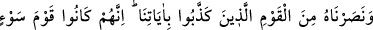
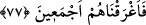

“Daha önce” yâni bu zikredilenlerden önce “Nuh da duâ etmiş,” yâni, onun
kavminin helâk edilmesi bedduâsında bulunduğu zaman vukû bulan haberini an. “Biz
onun” “Ben yenik düştüm, yardım et” (el-Kamer, 54/10) şeklindeki “duâsını kabul
etmiştik. Böylece kendisini ve (îman eden) yakınlarını büyük sıkıntıdan” içinde
bulundukları kavminin eziyetinden hâsıl olan büyük gamdan “kurtarmıştık.”
77. Onu, âyetlerimizi inkâr eden kavimden koruduk. Gerçekten onlar, fena bir
kavim idi; bu yüzden topunu birden (suya) gömdük.
“Onu,” başından sonuna kadar “âyetlerimizi inkâr eden kavimden koruduk.” intikam
almak ve muzaffer kılmak için ona yardım ettik.
“Gerçekten onlar, fenâ bir kavim idi;” Kötü, yâni kâfir bir topluluk idiler. Küfür ise
bütün kötülüklerin başıdır. “Bu yüzden topunu birden (suya) gömdük.” Çünkü, bir
toplumda Allah’ın âyetlerini yalanlamakta ısrar ile şer ve fesâda dalmak toplanırsa
mutlaka Allah Teâlâ onları helâk eder.
Bil ki peygamberlerin ve kâmil velîlerin duâlarında olduğu gibi duâ, Allah’ın izniyle
ve hulûs-ı kalb ile yapılırsa, kabûle şâyân olur.
Rivâyete göre Zeyd b. Sâbit (r.a.) yanında bir adamla Mekke’den Tâif’e yolculuğa
çıktı. Zeyd (r.a.) yanındakinin münâfık olduğunu bilmiyordu. Yolda bir harâbeye girdiler
ve uyudular. Bir müddet sonra o münâfık adam Zeyd (r.a.)’ın ellerini bağladı ve onu
öldürmek istedi. Zeyd (r.a.): “Yâ Rahmân, bana yardım et.” diye duâ etti. Münâfık,
“Yazıklar olsun sana, onu öldürme!” diye bir ses işitti. Hemen dışarıya çıkıp baktı,
hiçbir kimseyi göremedi. Bu hâdise iki kez daha tekrarlandı. Üçüncü defa çıkışında bir
süvâri onu öldürdü. Sonra içeriye girip Zeyd (r.a.)’ın iplerini çözdü ve: “Ben
Cebrâil’im, sen duâ ettiğinde yedinci kat semâda bulunuyordum. Allah bana: “Kulumun
imdâdına yetiş.” buyurdu.” dedi.
Bu hikâyeden alınacak dersler vardır:
1- Yola gidenin mutlaka bir arkadaşı olmalıdır. Ancak güven içinde olması için
arkadaşını sınamak gerekir. Çünkü bu zamanda dost görünümünde olan düşman çoğaldı.
Mesnevî’de der ki:
İnsanın gizli düşmanı pek çoktur
İhtiyatlı ve dikkatli insan, akıllı kişidir
Denilir ki: “Her şeyde bir ibret vardır. Kargadan alınacak ibret, çok sakınmasıdır.”
2- Duâ, kurtuluşun sebeplerindendir. Nitekim Allah Teâlâ âyette: “Duâsını kabul